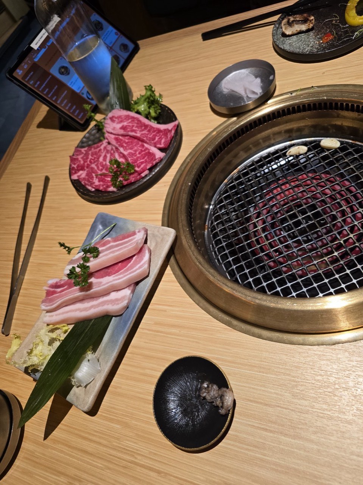
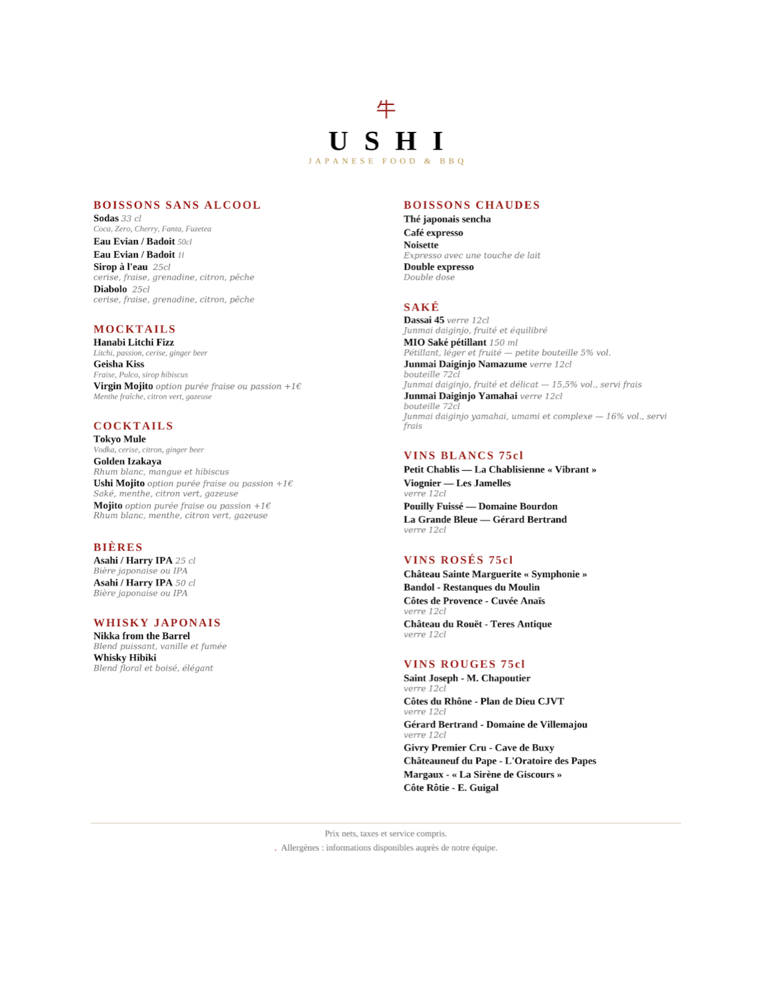
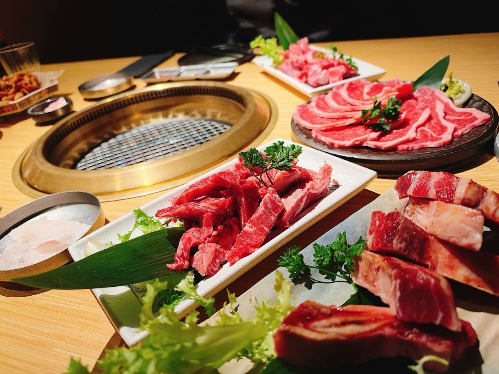
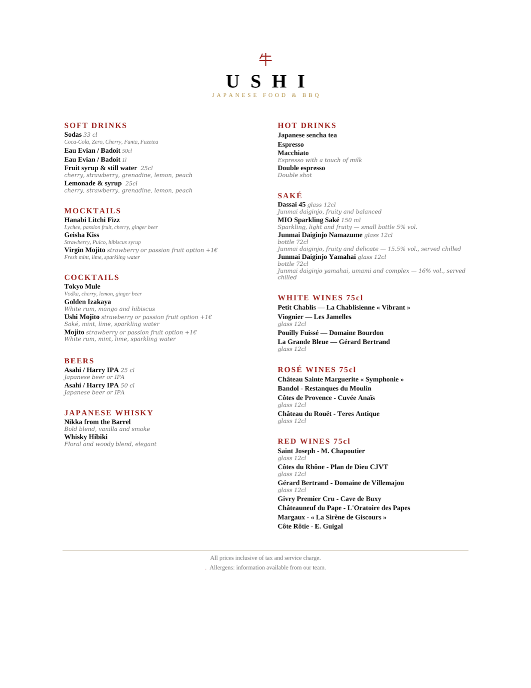

Restaurant japonais de viandes grillées · Lyon 2e
Ushi
Ushi est le restaurant japonais à Lyon spécialisé dans le barbecue japonais au charbon : wagyu japonais, black angus, viandes premium et marinades maison se font griller à table, dans un cadre chaleureux et authentique au cœur de Lyon 2, rue des Marronniers.
Ushi BBQ est le premier restaurant japonais à Lyon entièrement dédié au barbecue japonais au charbon. Chaque table est équipée d'un grill encastré où vous faites cuire vous-même vos pièces de viande : wagyu australien ou wagyu A4 japonais, bavette, entrecôte, poitrine de porc ibérique, travers de porc, fruits de mer et légumes de saison. Un concept de barbecue restaurant unique à Lyon, inspiré des véritables izakayas du Japon, à deux pas de Bellecour, rue des Marronniers dans le 2e arrondissement.
- Cuisine japonaise
- Barbecue
- Réservation conseillée

En images






Nous trouver
5 Rue des Marronniers, 69002 Lyon
| Lundi | 11:45–14:30 · 18:45–22:30 |
| Mardi | 11:45–14:30 · 18:45–22:30 |
| Jeudi | 11:45–14:30 · 18:45–22:30 |
| Vendredi | 11:45–14:30 · 18:45–22:30 |
| Samedi | 11:45–14:30 · 18:45–22:30 |
| Dimanche | 11:45–14:30 · 18:45–22:30 |